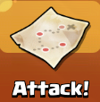
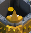
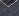
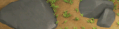
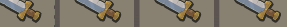
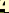
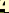
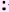
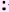

from datetime import *
from math import *
from random import *
#cocWindow = False
# things to do:
# 1) full troop employment certainty 2) hold down click instead of once at a time
cocWindow = App("Bluestacks").window(0)
timestamps = {
'testing': False,
'start': False,
'trainTroops': False,
'clearObstacles': False,
'collectResources': False,
'collectStats': False,
'donateTroops': False,
'_lastInteraction': False
}
# Barbarians
# Archers
# Giants
# Goblins
# Wall Breakers
# Balloons
# Wizards
# Healers
# Dragons
# P.E.K.K.A
myArmy = [110, 110, 0, 0, 0, 0, 0, 0, 0, 0] # Barch 90 Barbs, 90 Archers, 0 WB
# myArmy = [0, 80, 12, 44, 8, 0, 0, 0, 0, 0] # Farming Mix 80 Archers, 12 Giants, 44 Goblins, 8 WB
tranches = [28, 28, 27, 27] # troops in tranches for deploy
trainTimes = [20, 25, 120, 30, 120, 480, 480, 900, 1800, 2700]
# TODO: Fix OCR (Make DE conditional on whether they are high enough to have DE)
minGoldToAttack = 200000
minElixirToAttack = 200000
minDeToAttack = 0
def attack():
if startAttacking() == False:
return False
for i in range(0, 400):
if isGoodOpponent() == True:
if deployTroops() == True:
finishBattleAndGoHome()
return True
else:
return False
else:
if nextOpponent() == False:
return False
return True
def startAttacking():
try:
sleep(1)
cocWindow.find().click()
updateTimestamp('_lastInteraction')
sleep(2)
cocWindow.find().click()
updateTimestamp('_lastInteraction')
sleep(1)
if (cocWindow.exists()):
cocWindow.find().click()
updateTimestamp('_lastInteraction')
return True
except:
print "Error starting the attack process"
return False
def nextOpponent():
try:
cocWindow.find().click()
updateTimestamp('_lastInteraction')
sleep(2)
cocWindow.wait(, 20)
sleep(2)
return True
except:
print "Error in searching for new opponent"
sleep(4)
zoomOutAndCenter()
return False
def allPumpsFull():
# This function searches for empty pumps. If any exists, it's not an attractive base
# numberOfNicePumps = 0
# print "Starting pump checking..."
# try:
# if cocWindow.exists(Pattern("1434901654010.png").similar(0.95)):
# print "Ooh... found some three stripes... counting them now!"
# numberOfNicePumps += len(list([x for x in cocWindow.findAll(Pattern("1434901654010.png").similar(0.95))])) # Three stripe pumps
# if cocWindow.exists(Pattern("1434900842456.png").similar(0.95)):
# print "Ooh... found some two stripes... counting them now!"
# numberOfNicePumps += len(list([x for x in cocWindow.findAll(Pattern("1434900842456.png").similar(0.95))])) # Two stripe pumps
# print "Number of Nice Pumps found: ", numberOfNicePumps
## capture(cocWindow)
# if numberOfNicePumps >= 1:
# return True
# else:
# return False
# except:
# print "Error in checking pumps :("
# return False
# output = True
# if (cocWindow.exists(Pattern("1433793684004.png").similar(0.95))):
# output = False
# print "Pump check failed on 1"
# cocWindow.getLastMatch().highlight(1)
# else:
# if (cocWindow.exists(Pattern("1433793722614.png").similar(0.95))):
# output = False
# print "Pump check failed on 2"
# cocWindow.getLastMatch().highlight(1)
# else:
# if (cocWindow.exists(Pattern("1433875561726.png").similar(0.95))):
# output = False
# print "Pump check failed on 3"
# cocWindow.getLastMatch().highlight(1)
# else:
# if (cocWindow.exists(Pattern("1434046957414.png").similar(0.95))):
# output = False
# print "Pump check failed on 4"
# cocWindow.getLastMatch().highlight(1)
# else:
# if (cocWindow.exists(Pattern("1434096321731.png").similar(0.95))):
# output = False
# print "Pump check failed on 5"
# cocWindow.getLastMatch().highlight(1)
# else:
# if (cocWindow.exists(Pattern("1434182793660.png").similar(0.95))):
# output = False
# print "Pump check failed on 6"
# cocWindow.getLastMatch().highlight(1)
# else:
# if (cocWindow.exists(Pattern("1434192871182.png").similar(0.95))):
# output = False
# print "Pump check failed on 7"
# cocWindow.getLastMatch().highlight(1)
output=False
if (cocWindow.exists()):
print "Found near empty elixer tank level 11"
if (cocWindow.exists()):
print "Found near empty gold vault level 11"
output = True
print output
return output
def hasTHLeftRight():
leftRegion = Region((cocWindow.x + 67), (cocWindow.y + 112), 480, 800)
rightRegion = Region((cocWindow.x + 950), (cocWindow.y + 112), 480, 800)
leftRegion.highlight(1)
rightRegion.highlight(1)
if (leftRegion.exists(Pattern().similar(0.85))):
return True
if (rightRegion.exists(Pattern().similar(0.85))):
return True
if (leftRegion.exists(Pattern().similar(0.85))):
return True
if (rightRegion.exists(Pattern().similar(0.85))):
return True
return False
def isGoodOpponent():
## TODO: Test for high level TH/defense/walls/etc
try:
goldRegion = Region((cocWindow.x + 67), (cocWindow.y + 112), 160, 34)
elixirRegion = Region((cocWindow.x + 64), (cocWindow.y + 149), 160, 34)
deRegion = Region((cocWindow.x + 64), (cocWindow.y + 188), 125, 34)
# goldRegion.highlight(3)
# elixirRegion.highlight(3)
# Note: need to move this to inner part of if statement for efficiency...
gold = numberOCR(goldRegion, 'opponentLootgd')
elixir = numberOCR(elixirRegion, 'opponentLoote')
ratio = gold / float(elixir)
# de = numberOCR(deRegion, 'opponentLootgd')
print "Gold: ", gold
print "Elixir: ", elixir
print "Ratio: ", ratio
sometime = randint(0,5)
print "Sleeping for: ", sometime
sleep(sometime)
# print "Dark Elixir: ", de
# Increasing the trophy count
# if hasTHLeftRight():
# return True
# Going for LOOT!!
if (gold >= minGoldToAttack and elixir >= minElixirToAttack and ratio <= 1.15 and ratio >= 0.85):
print "OK... Gold, Elixer and Ratio are fine :)"
if allPumpsFull():
print "OK... Pumps are cool!!"
return True
return False
except:
print "isGoodOpponent() Something went wrong :("
print sys.exc_info()[0]
print sys.exc_info()[1]
return False
def deployTroops():
# TODO: Check for full-ish collectors and deploy troops differently if they exist (around all edges)
print "[+] Deploying troops"
zoomOutAndCenter()
try:
# landmark = cocWindow.find("attack_landmark.png")
landmark = cocWindow.find()
landmark.highlight(1)
Settings.DelayAfterDrag = 0.1
Settings.DelayBeforeDrop = 0.3
Settings.MoveMouseDelay = 0.3
dragDrop(landmark.getCenter(), Location(cocWindow.x + 68, cocWindow.y + 462))
updateTimestamp('_lastInteraction')
Settings.DelayAfterDrag = 0.3
Settings.DelayAfterDrop = 0.3
Settings.MoveMouseDelay = 0.3
landmark = cocWindow.find(Pattern().similar(0.75))
landmark.highlight(1) # Necessary to prevent "flinging" the screen...
except:
print "[!] Could not find attack landmark. Aborting attack."
cocWindow.find().click()
updateTimestamp('_lastInteraction')
return False
deployPoints = []
# Derived from original deploypoints. Estimated linear relationship y=f(x)=ax+b
# Starting with leftabove line
a=0.7687
b=-110.7
xmin=40
xmax=335
deploytroups = tranches[0]
stepsize=ceil((xmax-xmin)/(deploytroups-1))
for x in range(xmin, xmax, stepsize):
y = ceil(a*x + b)
deployPoints.append(Location((landmark.getX() + x), (landmark.getY() + y)))
over = deploytroups - (1 + floor((xmax-xmin)/stepsize))
for i in range(over):
x = xmin
y = ceil(a*x + b)
deployPoints.append(Location((landmark.getX() + x), (landmark.getY() + y)))
# Now the leftunder line
a=-0.758
b=-49.66
xmin=40
xmax=450
deploytroups = tranches[1]
stepsize=ceil((xmax-xmin)/(deploytroups-1))
for x in range(xmin, xmax, stepsize):
y = ceil(a*x + b)
deployPoints.append(Location((landmark.getX() + x), (landmark.getY() + y)))
over = deploytroups - (1 + floor((xmax-xmin)/stepsize))
for i in range(over):
x = xmin
y = ceil(a*x + b)
deployPoints.append(Location((landmark.getX() + x), (landmark.getY() + y)))
# Now the rightabove line
a=-0.845
b=1085.6
xmin=980
xmax=1386
deploytroups = tranches[2]
stepsize=ceil((xmax-xmin)/(deploytroups-1))
for x in range(xmin, xmax, stepsize):
y = ceil(a*x + b)
deployPoints.append(Location((landmark.getX() + x), (landmark.getY() + y)))
over = deploytroups - (1 + floor((xmax-xmin)/stepsize))
for i in range(over):
x = xmin
y = ceil(a*x + b)
deployPoints.append(Location((landmark.getX() + x), (landmark.getY() + y)))
# Now the rightbelow line
a=0.7746
b=-1159
xmin=980
xmax=1386
deploytroups = tranches[3]
stepsize=ceil((xmax-xmin)/(deploytroups-1))
for x in range(xmin, xmax, stepsize):
y = ceil(a*x + b)
deployPoints.append(Location((landmark.getX() + x), (landmark.getY() + y)))
over = deploytroups - (1 + floor((xmax-xmin)/stepsize))
for i in range(over):
x = xmin
y = ceil(a*x + b)
deployPoints.append(Location((landmark.getX() + x), (landmark.getY() + y)))
# deployPoints.append(Location((landmark.getX() + 286), (landmark.getY() + 113)))
# deployPoints.append(Location((landmark.getX() + 237), (landmark.getY() + 78)))
# deployPoints.append(Location((landmark.getX() + 200), (landmark.getY() + 47)))
# deployPoints.append(Location((landmark.getX() + 148), (landmark.getY() + 14)))
# deployPoints.append(Location((landmark.getX() + 110), (landmark.getY() - 20)))
# deployPoints.append(Location((landmark.getX() + 104), (landmark.getY() - 130)))
# deployPoints.append(Location((landmark.getX() + 160), (landmark.getY() - 169)))
# deployPoints.append(Location((landmark.getX() + 201), (landmark.getY() - 204)))
# deployPoints.append(Location((landmark.getX() + 260), (landmark.getY() - 248)))
# deployPoints.append(Location((landmark.getX() + 315), (landmark.getY() - 290)))
# deployPoints.append(Location((landmark.getX() + 360), (landmark.getY() - 325)))
# deployPoints.append(Location((landmark.getX() + 425), (landmark.getY() - 372)))
# deployPoints.append(Location((landmark.getX() + 1000), (landmark.getY() + 241)))
# deployPoints.append(Location((landmark.getX() + 1057), (landmark.getY() + 197)))
# deployPoints.append(Location((landmark.getX() + 1130), (landmark.getY() + 138)))
# deployPoints.append(Location((landmark.getX() + 1190), (landmark.getY() + 90)))
# deployPoints.append(Location((landmark.getX() + 1251), (landmark.getY() + 29)))
# deployPoints.append(Location((landmark.getX() + 1318), (landmark.getY() - 14)))
# deployPoints.append(Location((landmark.getX() + 1352), (landmark.getY() - 42)))
# deployPoints.append(Location((landmark.getX() + 1386), (landmark.getY() - 85)))
# deployPoints.append(Location((landmark.getX() + 1351), (landmark.getY() - 122)))
# deployPoints.append(Location((landmark.getX() + 1279), (landmark.getY() - 176)))
# deployPoints.append(Location((landmark.getX() + 1229), (landmark.getY() - 213)))
# deployPoints.append(Location((landmark.getX() + 1163), (landmark.getY() - 266)))
# deployPoints.append(Location((landmark.getX() + 1100), (landmark.getY() - 312)))
# deployPoints.append(Location((landmark.getX() + 1040), (landmark.getY() - 353)))
Settings.MoveMouseDelay = 0.01
try:
troops_barbarians = cocWindow.find()
except:
troops_barbarians = False
try:
troops_archers = cocWindow.find()
except:
troops_archers = False
try:
troops_barbking = cocWindow.find()
except:
troops_barbking = False
try:
troops_archqueen = cocWindow.find()
except:
troops_archqueen = False
left_lower = 0
left_upper = ((len(deployPoints) / 2) - 1)
right_lower = (len(deployPoints) / 2)
right_upper = (len(deployPoints) - 1)
print "Left bounds: ", left_lower, ", ", left_upper
print "Right bounds: ", right_lower, ", ", right_upper
# Deploy in tranches
oldnumb = 0
newnumb = 0
for tra in range(4):
newnumb += tranches[tra]
# First the barbs
troops_barbarians.click()
print "Deploying barbs..."
for i in range(oldnumb, newnumb):
cocWindow.click(deployPoints[i])
# Now the archers
troops_archers.click()
print "Deploying archies..."
for i in range(oldnumb, newnumb):
cocWindow.click(deployPoints[i])
oldnumb=newnumb
# Deploy the barbarians first
# if troops_barbarians != False:
# print "Deploying Barbs..."
# troops_barbarians.click()
#
# for i in range(0, myArmy[0]):
# cocWindow.click(deployPoints[i])
#
# #for i in range(0, (myArmy['barbarian'] / 2)):
# # cocWindow.click(deployPoints[randint(right_lower, right_upper)])
# Then the wallbreakers
# if troops_wallbreakers != False:
# troops_wallbreakers.click()
# for i in range(0, (myArmy[4] / 2)):
# loc = randint(left_lower, right_upper)
# cocWindow.click(deployPoints[loc])
# cocWindow.click(deployPoints[loc])
# # Then deploy the archers
# if troops_archers != False:
# print "Deploying archies..."
# troops_archers.click()
# for i in range(0, myArmy[1]):
# cocWindow.click(deployPoints[i])
#for i in range(0, (myArmy['archer'] / 2)):
# cocWindow.click(deployPoints[randint(right_lower, right_upper)])
# Then the Barb King and Archqueen if available
clickpoint = randint(0, right_upper)
if troops_barbking != False:
troops_barbking.click()
cocWindow.click(deployPoints[clickpoint])
if troops_archqueen != False:
troops_archqueen.click()
cocWindow.click(deployPoints[clickpoint])
sleep(8)
if troops_barbking != False:
troops_barbking.click()
if troops_archqueen != False:
troops_archqueen.click()
# Cleanup if necessary
if (cocWindow.exists()):
troops_barbarians.click()
for i in range(220):
cocWindow.click(deployPoints[clickpoint])
if (cocWindow.exists()):
troops_archers.click()
for i in range(220):
cocWindow.click(deployPoints[clickpoint])
print "[+] Troops have all been deployed"
updateTimestamp('_lastInteraction')
Settings.MoveMouseDelay = 0.5
return True
def campsFull():
try:
output = False
cocWindow.find().click()
if(cocWindow.exists(Pattern().similar(0.90))):
output = True
cocWindow.find(Pattern().similar(0.90)).click()
return output
except:
print "[INFO] Error in checking whether camps are full"
return False
def finishBattleAndGoHome():
# TODO: Collect (via OCR) stats about the battle
# and record them for later analysis and review
cocWindow.wait(, 180)
if (cocWindow.exists()):
cocWindow.find().click()
updateTimestamp('_lastInteraction')
return True
else:
return False
def trainTroops(troops):
# Routine to train troops for attack
# - Train equal amount across all barracks
# -- 45 Barbs, 45 Archers, 3/2 Wallbreakers
#
# - Set timer for 24 minutes to begin next attack
zoomOutAndCenter()
print "[+] Training new troops"
village = Region((cocWindow.x + 210), (cocWindow.y + 85), 1025, 790)
# Divide up the troops that need to be trained
# between the 4 barracks we have to train with
#
# 0 = Barbarians
# 1 = Archers
# 2 = Giants
# 3 = Goblins
# 4 = Wall Breakers
# 5 = Balloons
# 6 = Wizards
# 7 = Healers
# 8 = Dragons
# 9 = PEKKAs
theBarracks = [
[0,0,0,0,0,0,0,0,0,0],
[0,0,0,0,0,0,0,0,0,0],
[0,0,0,0,0,0,0,0,0,0],
[0,0,0,0,0,0,0,0,0,0]
]
totalTroops = 0
for (index, count) in enumerate(troops):
theBarracks[0][index] = floor((count / 4))
theBarracks[1][index] = floor((count / 4))
theBarracks[2][index] = floor((count / 4))
theBarracks[3][index] = floor((count / 4))
totalTroops += count
if (count % 4 > 0):
for i in range(0, (count % 4)):
j = barracksWithLeastTroops(theBarracks)
theBarracks[j][index] += 1
if totalTroops == 0:
return
try:
cocWindow.find().click()
updateTimestamp('_lastInteraction')
cocWindow.find(Pattern().similar(0.90)).click()
updateTimestamp('_lastInteraction')
sleep(1)
# Make sure barracks are empty, no remaining 'to be trained groups':
Settings.MoveMouseDelay = 0.5
for i in range (6):
while (cocWindow.exists(Pattern().similar(0.95))):
mouseMove(Pattern().similar(0.95))
mouseDown(Button.LEFT)
sleep (3)
mouseUp()
sleep (0.5)
cocWindow.find(Pattern().similar(0.90)).click()
sleep (1)
cocWindow.find(Pattern().targetOffset(-126,1)).click()
updateTimestamp('_lastInteraction')
sleep(1)
# And only now... Let's train!
for i in range(4):
for (index, qty) in enumerate(theBarracks[i]):
if qty > 0:
if index == 0:
target = cocWindow.find() # Barbarians
elif index == 1:
target = cocWindow.find() # Archers
elif index == 2:
target = cocWindow.find() # Giants
elif index == 3:
target = cocWindow.find() # Goblins
elif index == 4:
target = cocWindow.find() # Wallbreakers
elif index == 5:
target = cocWindow.find() # Balloons
elif index == 6:
target = cocWindow.find() # Wizards
elif index == 7:
target = cocWindow.find() # Healers
elif index == 8:
target = cocWindow.find() # Dragons
elif index == 9:
target = cocWindow.find() # PEKKAs
else:
print "Invalid index: ", index
Settings.MoveMouseDelay = 0.05
for n in range(0, qty):
target.click()
updateTimestamp('_lastInteraction')
Settings.MoveMouseDelay = 0.5
cocWindow.find().click()
updateTimestamp('_lastInteraction')
sleep(0.5)
cocWindow.find().click()
updateTimestamp('_lastInteraction')
updateTimestamp('trainTroops')
sleep(2)
except:
print "Error training new troops"
if cocWindow.exists():
cocWindow.find().click()
print sys.exc_info()[0]
print sys.exc_info()[1]
def barracksWithLeastTroops(barracks):
lowest_time = calcTrainTime(barracks[0])
lowest_i = 0;
for (i, barrack) in enumerate(barracks):
time = calcTrainTime(barrack)
if time < lowest_time:
lowest_i = i;
lowest_time = time
return lowest_i
def calcTrainTime(barrack):
time = 0
for (i, count) in enumerate(barrack):
time += (count * trainTimes[i])
return time
def donateTroops():
# Routine to donate troops to clan members
# - Open sidebar
# - Find/click [Donate] button(s)
# - Donate troops (Archers?) until icon is gray
# - Track troops donated
# - Retrain donated troops
# - Update timers (_lastInteraction, donate, buildTroops, etc.)
donations = 0
fSidebar()
try:
for donate in cocWindow.findAll(Pattern().similar(0.80)):
donate.click()
updateTimestamp('_lastInteraction')
sleep(1)
donateDialog = Region((donate.x + 88), (donate.y - 175), 765, 435)
Settings.MoveMouseDelay = 0
while donateDialog.exists(Pattern().similar(0.90), 0):
donateDialog.getLastMatch().click()
donations += 1
updateTimestamp('_lastInteraction')
sleep(0.5)
Settings.MoveMouseDelay = 0.5
print "Donated ", donations, " archers"
except:
print "[-] Nobody has asked for donations. Moving on."
# print sys.exc_info()[0]
# print sys.exc_info()[1]
_closeSidebar()
updateTimestamp('donateTroops')
if (donations > 0):
trainTroops({ 'archer': donations })
return
def _openSidebar():
try:
if cocWindow.exists(,0):
cocWindow.getLastMatch().click()
sleep(1)
return True
else:
print "Sidebar opener doesn't exist"
return False
except:
print "[!] Could not open sidebar"
return False
def _closeSidebar():
try:
if cocWindow.exists(, 0):
cocWindow.getLastMatch().click()
updateTimestamp('_lastInteraction')
sleep(2)
return True
else:
print "Sidebar closer doesn't exist"
return False
except:
print "[!] Could not close sidebar"
return False
def collectResources():
resources = [, ,Pattern().similar(0.80)]
window = Region((cocWindow.x + 210), (cocWindow.y + 85), 1025, 790)
for resource in resources:
try:
for _temp in window.findAll(resource):
_temp.click()
updateTimestamp('_lastInteraction')
except:
print "[!] There was an error collecting resources"
updateTimestamp('collectResources')
return
# TODO
def removeObstacles():
# Routine to find and remove obstacles
pass
# TODO
def observeVillageStats():
# Routine to collect/OCR village stats
# And return them in an array/dictionary...
# Or maybe right them to a file?
pass
# Starts BlueStacks Player
# Opens Clash of Clans app
# Centers village on the screen
#
# Returns: True if succeeded, False if anything failed
def startClashOfClans():
startAndFocusApp()
waitVanish(, FOREVER)
sleep(3)
cocWindow = App("Bluestacks").window(0)
recentApps = Region((cocWindow.x + 8), (cocWindow.y + 110), 1430, 150)
try:
recentApps.find(Pattern().exact()).click()
cocWindow.wait(, 30)
cocWindow.waitVanish(, FOREVER)
# cocWindow.wait("1420225678008.png", FOREVER)
# Test for recent enemy raid dialog
if cocWindow.exists():
cocWindow.getLastMatch().click()
updateTimestamp('_lastInteraction')
sleep(1)
else:
sleep(3)
zoomOutAndCenter()
except:
print "[!] Could not find COC icon, assuming game is already started..."
updateTimestamp('start')
return True
# Takes a string as arg1 and updates that
# timestamp (if it exists) with the current
# datetime.
def updateTimestamp(timer):
if timer in timestamps:
timestamps[timer] = datetime.now()
else:
print "[!] Invalid timestamp: " + timer
return
# Zooms the screen all the way out
#
# TODO: Reliably center the village on the map
#
# Returns: True on success, False otherwise
def zoomOutAndCenter():
try:
startAndFocusApp()
print "[+] Zooming out and centering village"
type("-", Key.CTRL)
sleep(0.5)
type("-", Key.CTRL)
sleep(0.5)
type ("-", Key.CTRL)
sleep(0.5)
updateTimestamp('_lastInteraction')
except:
print "[!] Something went wrong while trying to zoom out..."
return False
return True
def startAndFocusApp():
try:
switchApp("C:\Program Files (x86)\BlueStacks\HD-StartLauncher.exe")
sleep(1)
except:
print "[!] Could not start/focus the BlueStacks Player"
return False
return True
# Checks to see if we've been kicked for being idle
# If so, it will reload the game and reset the village
# so we can pick up where we left off.
#
# TODO: Check for recent attack dialog when we return to from idle
def checkIdle():
output=False
if (cocWindow.exists()):
cocWindow.find().click()
sleep(15)
output = True
if (cocWindow.exists()):
cocWindow.find().click()
sleep(15)
output = True
if (cocWindow.exists()):
cocWindow.find().click()
sleep(15)
output = True
if (cocWindow.exists()):
cocWindow.find().click()
sleep(15)
output = True
if (cocWindow.exists()):
cocWindow.find().click()
sleep(15)
output = True
zoomOutAndCenter()
return output
def preventIdle():
# Exception handling is done in main loop
# try:
#cocWindow.find("1420776357181.png").click()
#updateTimestamp('_lastInteraction')
#sleep(2)
#cocWindow.find("1420240870546.png").click()
#
#sleep(2)
_openSidebar()
sleep(5)
_closeSidebar()
sleep(5)
updateTimestamp('_lastInteraction')
def testOcr():
try:
goldRegion = selectRegion("Select Loot")
gold = numberOCR(goldRegion, 'opponentLoot')
print "Loot: ", gold
except:
print "Failed :("
print sys.exc_info()[0]
print sys.exc_info()[1]
return
def numberOCR(Reg, ocrType):
if ocrType == 'opponentLootgd':
numberImages = [Pattern( ).similar(0.95), Pattern().similar(0.95),Pattern().similar(0.95),Pattern().similar(0.95),Pattern().similar(0.95),Pattern().similar(0.95),Pattern(
).similar(0.95), Pattern().similar(0.95),Pattern().similar(0.95),Pattern().similar(0.95),Pattern().similar(0.95),Pattern().similar(0.95),Pattern( ).similar(0.95),Pattern().similar(0.95),Pattern().similar(0.95),Pattern().similar(0.95)]
# numberImages = [Pattern("oppLoot_0.png").exact(),Pattern("oppLoot_1.png").exact(),Pattern("oppLoot_2.png").exact(),Pattern("oppLoot_3.png").similar(0.95),Pattern("oppLoot_4.png").similar(0.95),Pattern("oppLoot_5.png").exact(),Pattern("oppLoot_6.png").exact(),Pattern("oppLoot_7.png").similar(0.95),Pattern("oppLoot_8.png").exact(),Pattern("oppLoot_9.png").exact()]
elif ocrType == 'opponentLoote':
numberImages = [Pattern().similar(0.95),Pattern().similar(0.95),Pattern().similar(0.95),Pattern().similar(0.95),Pattern().similar(0.95),Pattern().similar(0.95),Pattern().similar(0.95),Pattern().similar(0.95),Pattern().similar(0.95),Pattern().similar(0.95)]
# numberImages = [Pattern("1433590442780.png").similar(0.95), Pattern("1433590463994.png").similar(0.95),Pattern("1433590478196.png").similar(0.95),Pattern("1433590489070.png").similar(0.95),Pattern("1433590524020.png").similar(0.95),Pattern("1433590578269.png").similar(0.95),Pattern("1433590609952.png").similar(0.95),Pattern("1433590626580.png").similar(0.95),Pattern("1433590636277.png").similar(0.95),Pattern("1433590666869.png").similar(0.95)]
digitalNumber = 0
resultList = list()
# Reg.highlight(3)
for x in numberImages:
if Reg.exists(x,0):
Reg.findAll(x)
#digital find result into list
digitalList = list(Reg.getLastMatches())
#convert list into tuple(image, digital)
for y in digitalList:
#resultList.append(tuple(y,0))
t = (y,digitalNumber)
resultList.append(t)
digitalNumber = digitalNumber+1
sortedResultList = sorted(resultList,key=lambda x: x[0].x)
#print sortedResultList
ret = 0
listLen = len(sortedResultList)
for x, i in enumerate(sortedResultList):
ret += 10 **(listLen - x - 1) * i[1]
return ret
def secondsSinceLast(ts):
diff = datetime.now() - ts;
return diff.seconds
def timeToTrainArmy():
return (28*25 + 27*20) # boost on >> /4
def initialise():
print "[INFO] RESTART at: " + str(datetime.now())
startAndFocusApp()
checkIdle()
print "[INFO] Ready to go at: " + str(datetime.now())
# To Do: check which troups have been trained and clean up the mess
# Main "game loop"
#if (startClashOfClans() == True):
# print "Clash of Clans has started and is ready to go!"
# while (True):
# Make sure we weren't kicked for being idle
# print "[+] Idle Check"
# checkIdle()
# # Collect resources every 10 minutes
# if ((timestamps['collectResources'] == False) or (secondsSinceLast(timestamps['collectResources']) > 600)):
# print "[+] Time to collect resources"
# collectResources()
# else:
# print "[INFO] Time since last collected resources: ", secondsSinceLast(timestamps['collectResources']), "/ 600"
# # Donate troops every 5 minutes
# if ((timestamps['donateTroops'] == False) or (secondsSinceLast(timestamps['donateTroops']) > 300)):
# print "[+] Time to donate troops"
# donateTroops()
# Train new troops and attack after the last trainTroops() finishes
# if ((timestamps['trainTroops'] == False) or (secondsSinceLast(timestamps['trainTroops']) > timeToTrainArmy())):
# print "+-------------------------------------------------------+"
# print "| |"
# print "| |"
# print "+-------------------------------------------------------+"
# print ""
# sleep(2)
# print "+-------------------------------------------------------+"
# print "| |"
# print "| WARNING |"
# print "| |"
# print "+-------------------------------------------------------+"
# print ""
# sleep(2)
# print "+-------------------------------------------------------+"
# print "| |"
# print "| WARNING |"
# print "| |"
# print "+-------------------------------------------------------+"
# print ""
# startAndFocusApp()
# sleep(10)
# print "[+] Idle Check"
# checkIdle()
# sleep(5)
# print "[+] Time to train troops and attack"
# trainTroops(myArmy)
# attack()
# else:
# print "[INFO] Time since troops were trained: ", secondsSinceLast(timestamps['trainTroops']), "/", timeToTrainArmy()
# # Perform an interaction with the game to prevent idling out if 30 seconds has passed with no interaction
# if ((timestamps['_lastInteraction'] == False) or (secondsSinceLast(timestamps['_lastInteraction']) > 60)):
# print "[+] Interacting with the screen to prevent getting kicked for too much idle time"
# if preventIdle() == False:
# print "Something went wrong, aborting in case Sidebar didn't close."
# break
# else:
# print "[INFO] Time since last interaction: ", secondsSinceLast(timestamps['_lastInteraction'])
# Sleep 20 seconds before running the loop again
# sleep(20)
# ------------------------------------------------------
# Initialising: checks for initial army trained
def attackLoop():
try:
checkIdle()
zoomOutAndCenter()
if ((timestamps['trainTroops'] == False) or (secondsSinceLast(timestamps['trainTroops']) > timeToTrainArmy()) or (campsFull() == True)):
print "[INFO] Time to clean up, train and then attack..."
if (timestamps['trainTroops'] == True):
print "[INFO] secondsSinceLast: ", secondsSinceLast(timestamps['trainTroops']), "/", timeToTrainArmy()
else:
print "[INFO] timestamps[traintroops] is False"
trainTroops(myArmy)
attack()
while ((secondsSinceLast(timestamps['trainTroops'])<timeToTrainArmy()) and (campsFull() == False)):
print "[INFO] Time since troops were trained: ", secondsSinceLast(timestamps['trainTroops']), "/", timeToTrainArmy()
preventIdle()
except:
print "[INFO] Error with Bluestacks player detected at: " + str(datetime.now())
print "[INFO] Value for timestamps[trainTroops]: " + str(timestamps['trainTroops'])
initialise()
# Main 'program' HAHA
initialise()
sleep(2)
while True:
attackLoop()
#
#checkIdle()
#sleep(2)
#for i in range(50):
# trainTroops(myArmy)
# attack()
# checkIdle()
# # now wait until the new attack can start :)...
# print "[INFO] Time since troops were trained: ", secondsSinceLast(timestamps['trainTroops']), "/", timeToTrainArmy()
# while (secondsSinceLast(timestamps['trainTroops'])<timeToTrainArmy()):
# checkIdle()
# preventIdle()
# collectResources()
# donateTroops()
# trainTroops(myArmy)
# zoomOutAndCenter()
# attack()
# allPumpsFull()
# isGoodOpponent()
).similar(0.95),Pattern().similar(0.95),Pattern().similar(0.95),Pattern().similar(0.95)]
# numberImages = [Pattern("oppLoot_0.png").exact(),Pattern("oppLoot_1.png").exact(),Pattern("oppLoot_2.png").exact(),Pattern("oppLoot_3.png").similar(0.95),Pattern("oppLoot_4.png").similar(0.95),Pattern("oppLoot_5.png").exact(),Pattern("oppLoot_6.png").exact(),Pattern("oppLoot_7.png").similar(0.95),Pattern("oppLoot_8.png").exact(),Pattern("oppLoot_9.png").exact()]
elif ocrType == 'opponentLoote':
numberImages = [Pattern().similar(0.95),Pattern().similar(0.95),Pattern().similar(0.95),Pattern().similar(0.95),Pattern().similar(0.95),Pattern().similar(0.95),Pattern().similar(0.95),Pattern().similar(0.95),Pattern().similar(0.95),Pattern().similar(0.95)]
# numberImages = [Pattern("1433590442780.png").similar(0.95), Pattern("1433590463994.png").similar(0.95),Pattern("1433590478196.png").similar(0.95),Pattern("1433590489070.png").similar(0.95),Pattern("1433590524020.png").similar(0.95),Pattern("1433590578269.png").similar(0.95),Pattern("1433590609952.png").similar(0.95),Pattern("1433590626580.png").similar(0.95),Pattern("1433590636277.png").similar(0.95),Pattern("1433590666869.png").similar(0.95)]
digitalNumber = 0
resultList = list()
# Reg.highlight(3)
for x in numberImages:
if Reg.exists(x,0):
Reg.findAll(x)
#digital find result into list
digitalList = list(Reg.getLastMatches())
#convert list into tuple(image, digital)
for y in digitalList:
#resultList.append(tuple(y,0))
t = (y,digitalNumber)
resultList.append(t)
digitalNumber = digitalNumber+1
sortedResultList = sorted(resultList,key=lambda x: x[0].x)
#print sortedResultList
ret = 0
listLen = len(sortedResultList)
for x, i in enumerate(sortedResultList):
ret += 10 **(listLen - x - 1) * i[1]
return ret
def secondsSinceLast(ts):
diff = datetime.now() - ts;
return diff.seconds
def timeToTrainArmy():
return (28*25 + 27*20) # boost on >> /4
def initialise():
print "[INFO] RESTART at: " + str(datetime.now())
startAndFocusApp()
checkIdle()
print "[INFO] Ready to go at: " + str(datetime.now())
# To Do: check which troups have been trained and clean up the mess
# Main "game loop"
#if (startClashOfClans() == True):
# print "Clash of Clans has started and is ready to go!"
# while (True):
# Make sure we weren't kicked for being idle
# print "[+] Idle Check"
# checkIdle()
# # Collect resources every 10 minutes
# if ((timestamps['collectResources'] == False) or (secondsSinceLast(timestamps['collectResources']) > 600)):
# print "[+] Time to collect resources"
# collectResources()
# else:
# print "[INFO] Time since last collected resources: ", secondsSinceLast(timestamps['collectResources']), "/ 600"
# # Donate troops every 5 minutes
# if ((timestamps['donateTroops'] == False) or (secondsSinceLast(timestamps['donateTroops']) > 300)):
# print "[+] Time to donate troops"
# donateTroops()
# Train new troops and attack after the last trainTroops() finishes
# if ((timestamps['trainTroops'] == False) or (secondsSinceLast(timestamps['trainTroops']) > timeToTrainArmy())):
# print "+-------------------------------------------------------+"
# print "| |"
# print "| |"
# print "+-------------------------------------------------------+"
# print ""
# sleep(2)
# print "+-------------------------------------------------------+"
# print "| |"
# print "| WARNING |"
# print "| |"
# print "+-------------------------------------------------------+"
# print ""
# sleep(2)
# print "+-------------------------------------------------------+"
# print "| |"
# print "| WARNING |"
# print "| |"
# print "+-------------------------------------------------------+"
# print ""
# startAndFocusApp()
# sleep(10)
# print "[+] Idle Check"
# checkIdle()
# sleep(5)
# print "[+] Time to train troops and attack"
# trainTroops(myArmy)
# attack()
# else:
# print "[INFO] Time since troops were trained: ", secondsSinceLast(timestamps['trainTroops']), "/", timeToTrainArmy()
# # Perform an interaction with the game to prevent idling out if 30 seconds has passed with no interaction
# if ((timestamps['_lastInteraction'] == False) or (secondsSinceLast(timestamps['_lastInteraction']) > 60)):
# print "[+] Interacting with the screen to prevent getting kicked for too much idle time"
# if preventIdle() == False:
# print "Something went wrong, aborting in case Sidebar didn't close."
# break
# else:
# print "[INFO] Time since last interaction: ", secondsSinceLast(timestamps['_lastInteraction'])
# Sleep 20 seconds before running the loop again
# sleep(20)
# ------------------------------------------------------
# Initialising: checks for initial army trained
def attackLoop():
try:
checkIdle()
zoomOutAndCenter()
if ((timestamps['trainTroops'] == False) or (secondsSinceLast(timestamps['trainTroops']) > timeToTrainArmy()) or (campsFull() == True)):
print "[INFO] Time to clean up, train and then attack..."
if (timestamps['trainTroops'] == True):
print "[INFO] secondsSinceLast: ", secondsSinceLast(timestamps['trainTroops']), "/", timeToTrainArmy()
else:
print "[INFO] timestamps[traintroops] is False"
trainTroops(myArmy)
attack()
while ((secondsSinceLast(timestamps['trainTroops'])<timeToTrainArmy()) and (campsFull() == False)):
print "[INFO] Time since troops were trained: ", secondsSinceLast(timestamps['trainTroops']), "/", timeToTrainArmy()
preventIdle()
except:
print "[INFO] Error with Bluestacks player detected at: " + str(datetime.now())
print "[INFO] Value for timestamps[trainTroops]: " + str(timestamps['trainTroops'])
initialise()
# Main 'program' HAHA
initialise()
sleep(2)
while True:
attackLoop()
#
#checkIdle()
#sleep(2)
#for i in range(50):
# trainTroops(myArmy)
# attack()
# checkIdle()
# # now wait until the new attack can start :)...
# print "[INFO] Time since troops were trained: ", secondsSinceLast(timestamps['trainTroops']), "/", timeToTrainArmy()
# while (secondsSinceLast(timestamps['trainTroops'])<timeToTrainArmy()):
# checkIdle()
# preventIdle()
# collectResources()
# donateTroops()
# trainTroops(myArmy)
# zoomOutAndCenter()
# attack()
# allPumpsFull()
# isGoodOpponent()